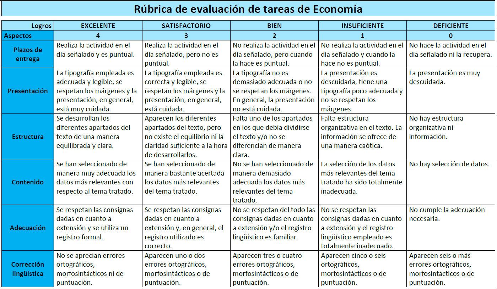

Rúbrica
Se utilizará la rúbrica para la evaluación tanto de las tareas individuales de realizadas a lo largo de la unidad del sistema financiero y sus productos.
El alumno conocerá la rúbrica antes de realizar la tarea para que tenga presente los aspectos que se tendrán en cuenta y como conseguir los máximos logros en cada uno de esos aspectos.
La rúbrica no dejará dudas sobre la evaluación ya que el alumnado sabrá en lo que no ha fallado y en lo que debe mejorar, aparte de que en la tarea lleve su comentario o comentarios de retroalimentación.
La rúbrica es la que aparece en la siguiente imagen:

Insignias
Para el reconocimiento de los logros alcanzados por el alumnado en la realización de las tareas de clase se utilizarán las insignias que serán una forma de motivarlos y animarlos a continuar trabajando y esforzándose en el día a día.
El objetivo de conseguir estas insignias es jugar al pasapalabra de economía. El juego consistirá en la división de la clase en dos equipos, cada equipo tendrá un capitán. El objetivo del grupo será conseguir el máximo tiempo posible, que se sumará al rosco final. El tiempo se consigue con cada actividad realizada en clase. 5 segundos por realizarla, 10 segundo si se hace correctamente. Cada integrante del grupo sumará sus segundos al equipo. Será tarea del capitán que todos consigan el máximo tiempo. Se entregará un glosario de palabras, para que vayan aprendiéndolas.
Estas serían las insignias que iría consiguiendo el alumnado evaluando y reforzando al alumnado en cada tarea si la han superado.
Lo que se pretende con las insignias es reforzarlos de manera positiva y motivándolos para que al final de la unidad sumen sus segundos a su equipo de cara al rosco de pasapalabra.